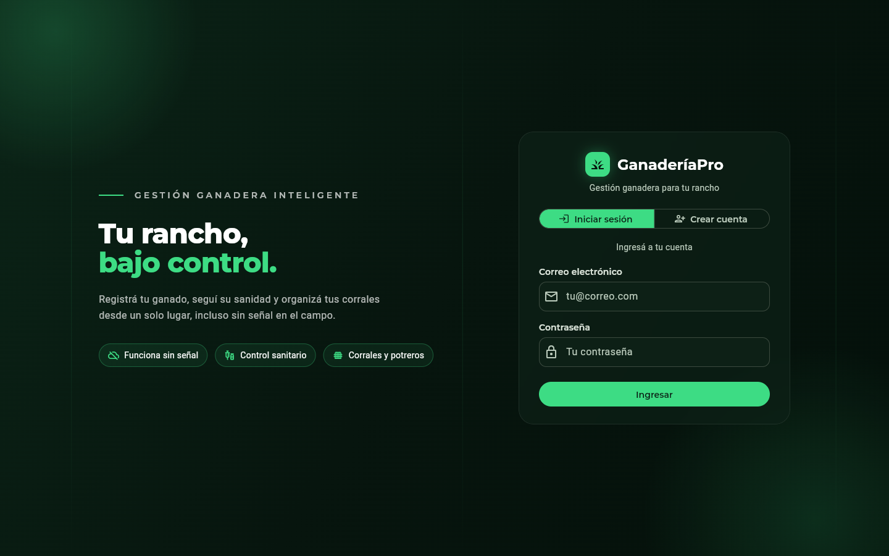
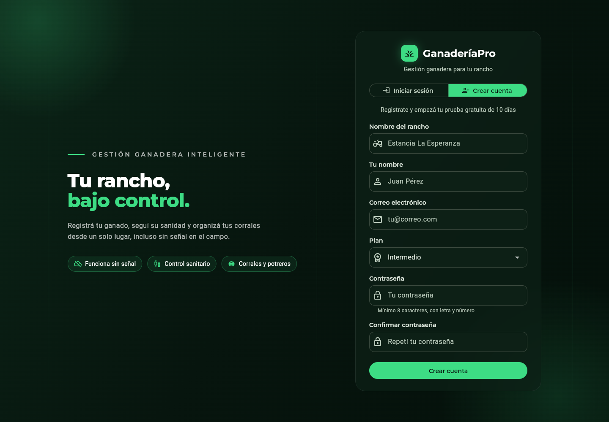

Gestión de ganado
Registrá cada animal por su arete y consultá su ficha completa en segundos.
Gestión ganadera inteligente
Registrá tu ganado, seguí su sanidad y organizá tus corrales desde un solo lugar, incluso sin señal en el campo. Probalo gratis durante 10 días.
Funciones
Dejá las planillas sueltas: cada dato de tu ganado queda ordenado y a mano.
Registrá cada animal por su arete y consultá su ficha completa en segundos.
Organizá tu ganado por corral, con su capacidad y ocupación siempre a la vista.
Vacunas y tratamientos de cada animal, con aviso de las próximas dosis.
Sumá colaboradores y socios, cada uno con los permisos de su rol.
Exportá la información de tu rancho a Excel cuando la necesites.
Preguntá cosas como «¿cuántas hembras tengo?» sin buscar a mano.
Modo sin conexión
GanaderíaPro está pensado para donde se trabaja de verdad: lejos de la antena.
El sistema en acción


Cómo funciona
Registrate en minutos y arrancá tu prueba gratuita de 10 días, sin tarjeta.
Registrá tus animales con su arete, sexo, raza y peso.
Consultá y actualizá tu rancho desde el celular o la computadora.
Para todo el equipo
Los permisos se ajustan al rol de cada persona dentro del rancho.
Ve todo el rancho, administra el plan y decide quién accede a qué.
Registra vacunas y tratamientos, y sigue el calendario sanitario.
Cargan animales, pesajes y movimientos de corral desde el campo.
Planes
Todos incluyen 10 días de prueba gratuita.
Para empezar a ordenar tu rancho.
Más elegido
Para ranchos en crecimiento.
Capacidades ampliadas para operaciones más grandes.
Recursos
Diez días, contados desde que creás tu cuenta. No te pedimos tarjeta para empezar.
Para la mayoría de las funciones sí, pero podés registrar animales sin conexión: quedan guardados en el dispositivo y se sincronizan solos cuando vuelve la señal.
Por su número de arete, que no se puede repetir dentro de tu rancho.
No. Cada rancho accede únicamente a su propia información.
Sí. Podés sumar socios y colaboradores según tu plan, y cada uno trabaja con los permisos de su rol.
El sistema te avisa cuando estás cerca del límite y te indica qué plan necesitás para seguir creciendo.
10 días gratis, sin tarjeta. Configurás tu cuenta en minutos.
Crear cuenta gratis